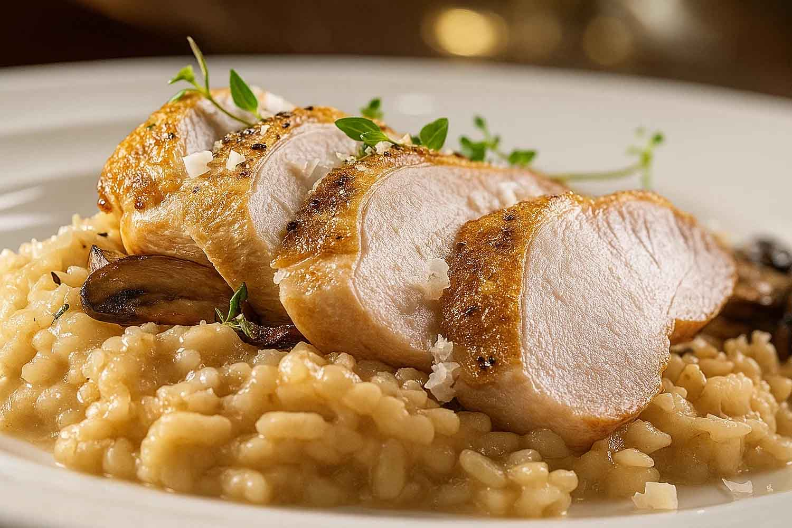

Krémové kuřecí rizoto

Ingredience
- 300g rýže Arborio
- 2 kuřecí prsa
- 1 litr vývaru
- 1 dcl bílého vína
- 1 cibule
- 50g másla a parmazán
Postup přípravy
- Maso: Kuřecí maso nakrájejte, orestujte na pánvi a dejte stranou.
- Rýže: Na cibulce osmahněte rýži, zalijte vínem a nechte odpařit.
- Vaření: Postupně přilévejte vývar a míchejte, dokud není rýže al dente.
- Finále: Vmíchejte maso, odstavte a zašlehejte studené máslo a parmazán pro krémovost.